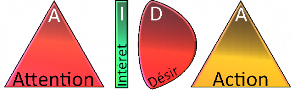
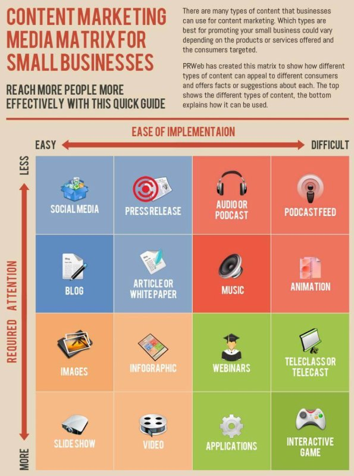
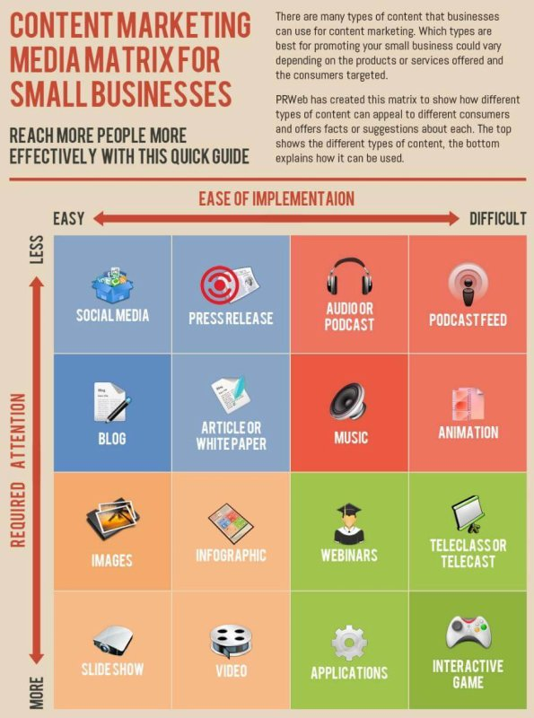

![[ANA JDG] Asterix and the Great Rescue - Megadrive](../vi/6oUXi0ckLmA/default.jpg)
![[ Présentation pour la chaîne Grenier des Joueurs ] JDG Prod](../art/SHAR.6419.583.2.jpg)


Lorsqu'on fait des vidéos sur YouTube ou des pins pour Pinterest, il faut que ça soit bien mit en valeur par l'image.
Lorsque vous faîtes la photo d'un produit, pensez à bien centrer ce dernier à une distance de 2 fois sa largeur et 2 fois sa hauteur dans la plan pour avoir de la marge quand il faudra rogner la photo.
Une fois votre photographie faîtes, il est temps de passer à son optimisation:
- Faîtes basculer dans les couleurs chaudes ( saturées ) votre image ( ça met en valeur les bijoux et la douceur des peaux féminines et donne une ambiance convivial à des photos d'intérieur )
- Faîtes un jeu de lumière pour éviter les zones trop sombres. Ça fait ressortir le brillant et donc met encore plus en valeur le sujet. N'hésiter pas à rogner si une zone d'ombre est beaucoup trop importante.
- Favoriser le gros plan ( pas le fish-eye ) pour mettre en valeur les touts petits produits comme les bagues, pin's ,... Ça tombe sous le sens mais le but est qu'on les voient.
- Décentrer le produit du plan et utiliser la règle des tiers pour que votre composition donne une situation, un contexte au produit.
- Mettez du texte/votre logo sur votre image dans un endroit où votre produit ne sera pas recouvert. Inutile de mettre un filigrane vu que le but est de fournir une image mettant en valeur un produit et donc une marque.
KidpaddleetcieGlin
Description :
Le Blog d'une personne aillant découvert internet en 2007 qui partage une partie de sa vie mais surtout ses réflexions, ses découvertes et ses cours!
Bon, je ne vous garantit pas que 100% du contenu est fiable mais aux moins je l'approuve! :)
N'oubliez pas de me retrouver sur les autres sites internet du réseaux KidpaddleetcieGlin retrouvable dans le premier article de chaque page. ^-^
Bon, je ne vous garantit pas que 100% du contenu est fiable mais aux moins je l'approuve! :)
N'oubliez pas de me retrouver sur les autres sites internet du réseaux KidpaddleetcieGlin retrouvable dans le premier article de chaque page. ^-^
Je bosse actuellement pour la chaîne Grenier des Joueurs
Son morceau préféré
Retour au blog de KidpaddleetcieGlin
![[ Aide Community Manager ] Les outils pour Twitter](../5252/79895252/pics/3339771924_1_2_e6uRgNEZ.png)
Twitter étant le réseau social publique et populaire depuis 10 ans, il est important de savoir y percer et optimiser ses tweets pour gagner un maximum de followers.
Voici une liste d'outil permettant d'être au courant des optimisations possibles.
Twitter Analytics: https://analytics.twitter.com/
Il permet de se mettre au courant de vos meilleures performances.
TweetReach : https://tweetreach.com/
Offre un moteur de recherche des hashtags, de liens et de mots-clés en plus de ce que vous pouvez retrouver dans Twitter Analytics.
RiteTag : https://ritetag.com/
Permet de trouver de bons hashtags mais aussi de suivre les hashtags rechercher.
ManageFiltrer: https://www.manageflitter.com/
Permet de savoir qui a arrêter de vous suivre et qui sont les gens que vous suivez qui ne tweet rien depuis un bon moment.
TwitShot: https://chrome.google.com/webstore/detail/twitshot-for-chrome/efndcbfgochdmkgjpinknmeakjfkgjlk
Permet de tweeter des images que vous trouvez sur le net. Cela vous évite de devoir faire un copier-coller ou de devoir faire un " inspecter l'élément " pour le même résultat. Il inclut un lien vers la page où vous avez trouver l'image en plus.
Le Hashtag ( # ) a commencé à être utilisé en 2007 sur Twitter afin de lier les tweets entre eux.
Aujourd'hui, l'emploi d'un ou plusieurs hashtag est essentiel dans la communication pour la gestion des fluxs. En effet, l'internaute qui clique sur un hashtag dans une publication se retrouvera sur une page où se trouve d'autres publications contenant ce hashtag.
Lorsque vous faîtes une publication sur un réseau social comme Instagram, faire un nuage d'hashtag ( maximum 11, il ne faut pas abuser ) est une pratique à obtenir afin de ne pas être invisibiliser par la plateforme.
Un hashtag long sera toujours plus puissant qu'un hashtag court de part sa spécificité et donc l'intérêt certain, précis et probablement lié à une communauté.
Des sites webs tel que https://www.tagsfinder.com/fr-fr/ permettent de trouver facilement une série d'hashtag en lien avec un mot-clé mais se creuser la tête ou copier les hashtags les plus récurrents de votre clientèle/ followers vous offriront beaucoup plus de succès.

Comme vous le savez, le community managing c'est d'abord du marketing !
Pour qu'un contenu marketé soit efficace, il faut qu'il respecte la formule AIDA.
L'acronyme signifie:
- Awareness (Attention)
- Interest (Intérêt)
- Desire (Désir)
- Action (Action)
( Source: https://www.ionos.fr/digitalguide/web-marketing/analyse-web/le-modele-aida/#:~:text=En%201898%20d%C3%A9j%C3%A0%2C%20le%20mod%C3%A8le,int%C3%A9r%C3%AAt%2C%20g%C3%A9n%C3%A9rer%20le%20d%C3%A9sir). )
Retenez donc que le contenu marketé, pour qu'il soit efficace, doit être tape à l'½il ( pour capter l'attention ) , exposer des faits ( pour être intéressant ) , concerné dans une problématique ( pour être désirable ) et apporter la solution ( poussant l'internaute à cliquer sur le lien ).
Comme vous le savez, le community managing c'est d'abord du marketing !
Pour qu'un contenu marketé soit efficace, il faut qu'il respecte la formule AIDA.
L'acronyme signifie:
- Awareness (Attention)
- Interest (Intérêt)
- Desire (Désir)
- Action (Action)
( Source: https://www.ionos.fr/digitalguide/web-marketing/analyse-web/le-modele-aida/#:~:text=En%201898%20d%C3%A9j%C3%A0%2C%20le%20mod%C3%A8le,int%C3%A9r%C3%AAt%2C%20g%C3%A9n%C3%A9rer%20le%20d%C3%A9sir). )
Retenez donc que le contenu marketé, pour qu'il soit efficace, doit être tape à l'½il ( pour capter l'attention ) , exposer des faits ( pour être intéressant ) , concerné dans une problématique ( pour être désirable ) et apporter la solution ( poussant l'internaute à cliquer sur le lien ).
Il existe 16 formats de contenus différents permettant de faire passer des informations.

( Image provenant de http://www.prweb.com/ )
Comme l'image est parfaite, je vais juste vous fournir une version traduite par mes soins avec des ajouts pour la compréhension !
![[ Aide Community Manager ] Les formats de contenus et leurs temps d'implémentation et d'attention](../5252/79895252/pics/3339051590_1_5_FW5kJKN5.png)
Comprenez donc bien que les réseaux sociaux sont à privilégier et que le jeu-vidéo mettant en avant votre marque est passable.
Retenez quand même que nous parlons de FORMAT DE CONTENU et non pas de CONTENU. C'est un ensemble de généralité et il ne tient qu'à vous de choisir les formats qui iraient le mieux à votre marque.

( Image provenant de http://www.prweb.com/ )
Comme l'image est parfaite, je vais juste vous fournir une version traduite par mes soins avec des ajouts pour la compréhension !
Comprenez donc bien que les réseaux sociaux sont à privilégier et que le jeu-vidéo mettant en avant votre marque est passable.
Retenez quand même que nous parlons de FORMAT DE CONTENU et non pas de CONTENU. C'est un ensemble de généralité et il ne tient qu'à vous de choisir les formats qui iraient le mieux à votre marque.
Revenons sur quelques formats
L'article de blog
Comme nous sommes en quête d'améliorer notre visibilité sur le web et ainsi avoir un Search Engine Optimization ( " S.E.O. ", Optimisation pour les moteurs de recherche ), il vaut mieux ne pas se priver de faire des articles longs ( 2 000 mots ).
Si le public n'est pas bien réceptif ou si, VIA un logiciel comme Google Analytics, vous percevez une fatigue ou juste une perte de concentration de leur part, n'hésiter pas à faire des articles plus court.
La régularité permet de créer des routines pour les internautes donc sachez quoi dire et quoi mettre en avant le plus régulièrement possible TOUT EN ÉTANT PERTINENT.
Pour être utile, répondez aux questions des clients dans les articles au lieu de répondre la même chose à chaque client qui pose la même question.
Certains mots-clés vous permettront de monter vite dans les premiers résultats des recherches de Google. Amusez-vous à répéter ce mot-clé dans le titre et le texte. Ces mots-clés sont à choisir en fonction de la pertinence de l'article et de sa porté sur le temps.
Ne pas hésiter à faire des titres courts et incomplets ( sous forme de question par exemple ) ou alors mettre en avant une problématique ( le titre dénonce ) ou humoristique ( le titre est un jeu de mot ou un trait d'esprit ).
Varier les types de publication ( ressources, synthèses, interviews, critiques , témoignages et mise en avant de contenus divertissant ).
Les E-books, PDF,...
L'ami des articles de press, le complément d'information complet, c'est lui !
Ce contenu n'est pas disponible au client s'il n'envoi pas ses coordonnées dans un formulaire. Voyez donc son téléchargement comme une réussite et une opportunité d'en savoir d'avantage sur votre lecteur.
Ce PDF, livre électronique, doit contenir des informations nouvelles par rapport à l'article qui lui est associé donc faîtes un travail de fond comme si vous rédigez un TFE.
L'allégorie du TFE n'est pas à prendre à la légère car une bonne structure ( présence d'un sommaire ) , une bonne présentation ( illustrations ) et une bibliographie fournie vous permettront d'avoir une image de marque sérieuse et de confiance. Le client sera satisfait.
N'hésiter pas à mettre des espaces blancs pour faire respirer votre texte et vos images.
Une couverture original ou tape-à-l'½il est plus que conseillé. Il doit y avoir un prestige à le posséder.
Les modèles ( templates )
Mettre en avant des informations VIA des modèles ( des modules pré-faits rassemblant des informations ) est intéressant pour donner une image professionnelle à votre marque et d'apprendre une multitude d'information en un regard.
Une liste de partenaire , un calendrier éditorial , les derniers tweets mentionnant votre marque,... ces modèles trouvables sur des système de génération de contenus comme WordPress sont assez variés et c'est à vous de choisir lesquelles sont les plus pertinents pour votre marque.
L'infographie ( l'information par le visuel )
Une image qui raconte une histoire ou donne pleins d'informations autour d'un événement ou un produit, c'est la base de la publicité médiatique.
Comme il suffit d'un copier-coller pour que votre image se retrouve sur un blog, un tweet, un post sur Facebook, un article de press, ... mettre les informations permettant de lier l'image à la marque est primordial.
Quand vous faîtes ces fameuses images, restez simple, clair et efficace ! Un schéma sans dégradés, avec des aplats de couleur assez éloignés , des textes suffisamment grands et dans une police de caractère ne demandant pas un effort de décryptage vous apportera du succès dans le soutiens de vos propos.
Ne bourrez pas d'élément votre image, elle doit rester visible dans un format 1920x1080p ( Smartphone ).
Mettez un titre tout en haut et en grand. C'est important pour s'annoncer.
C'est pas beau de ne pas citer ses sources donc mettez-les soit en dessous des éléments pompés ou tout en bas de l'infographie.
Il existe 2 sites web complets pour réaliser des infographies:
- Canva : https://www.canva.com/fr_fr/
- Venngage : https://fr.venngage.com/
Les vidéos
YouTube appartient à Google, Google a le moteur de recherche en ligne le plus utilisé, les vidéos de YouTube se retrouve dans les résultats de recherche de Google,...
Faire des vidéos, c'est important pour développer l'image de la marque sur les réseaux sociaux et augmenter son S.E.O. grâce à YouTube. En effet, une vidéo est partageable et donc visible par tout ceux qui ont accès au Web via leurs écrans avec pour seule contrainte d'avoir les capacités de recevoir et lire les informations envoyées par les serveurs.
Le smartphone étant l'appareil le plus démocratisé et le plus utilisé pour la consommation de vidéo, veillez à ce que vos vidéos ne mettent pas des éléments importants en tout petit ( pas de texte d'une hauteur de moins de 12 pixels ).
Veillez à être naturelle si vous vous mettez en avant, inutile d'être parfait et d'agir de manière robotique. Mettez en confiance le visionneur.
Écrivez ou planifiez le déroulement. Vous pouvez improviser une blague ou un comportement mais respecter la structure.
Soignez votre son à tout prix. La majorité des informations d'une vidéo passe par l'audio sauf quand la vidéo est contemplative et ne met pas d'information technique ou d'histoire en avant. Évitez donc les saturations, les échos, les bruits parasites ou encore les gens qui parlent en fond.
Le podcast audio
Je ne sais pas si vous avez remarquer mais lorsqu'on stream sur des plateformes comme Twitch, on parle beaucoup plus à sa communauté qu'avec une vidéo " F.A.Q. ".
Le podcast audio peut avoir deux formes: Le live et le préenregistré.
Le live prend souvent la forme d'une discussion de bar où le maître de la conversation ( streamer ) répond aux questions après les avoir choisis selon leur pertinence. Les internautes posent les question en direct dans un tchat ( forum textuel ) où ils attendent d'avoir leurs réponses.
Le préenregistré prend souvent la forme d'une conversation entre deux personnes sur un seul et même sujet.
Bien sur, la formule "prend souvent la forme d'une" met en exergue le fait qu'il y a d'autres contenus possible avec ce format:
- Narration : Racontons l'histoire d'un sujet
- Interview : On demande à une personne qualifiée de répondre à des questions préétablies
- Panel : On demande à plusieurs personnes qualifiées de débattre autour d'un sujet donné
- Retransmission d'une conférence
La durée peut varier selon la liberté prise sur le sujet donné ainsi que l'organisation. Pour rendre votre série de podcast audio facile à suivre, le mieux est de respecter un plan, une structure. Faîtes gaffe à ne pas dépasser + d'une heure.
Des plateformes comme Soundcloud, Anchor, Spotify, Deezer et Itunes permettent de publié ces fichiers audios. Mettez-les aussi sur votre site Web ou votre Blog avec un résumé ou une transcription par partie en format texte afin de créer des articles apportant un contenu en plus.
Les Webinaires
Un webinaire est un séminaire en ligne. Vous présentez la marque et ses produits en direct.
La principale difficulté avec ce format de contenu est, comme pour les professeurs débutants avec ces technologies, d'être monotone et donc pas captivant.
L'astuce est donc de savoir rendre vivant la présentation VIA une interaction directe avec le public et une mise en avant des produits claire et précise.
Dîtes-vous que c'est comme faire un exposé devant une classe. Il faut que ça bouge, que ça soit divertissant ( voir amusant ) et informant. C'est comme un One-Man-Show mais où le sujet est une marque ou un produit.
N'oubliez pas d'enregistrer vos webinaires pour les gens qui n'étais pas là et mettez-les dans des playlists accessibles sur votre site web ou votre blog.
Un Community Manager étant appelé de tout les cotés ( e-mail, chat , Twitter , Facebook, ...), il y a des limites de temps à respecter pour répondre aux questions sans perdre l'attention du client ( ce qui peut l'énerver ou juste descendre votre marque dans son estime).
Dans une messagerie privé ( le fameux "MP" ), la réponse doit être spontanée ( une minute ou deux pour répondre ).
Par téléphone, vous devez donner la réponse dans les 5 minutes après avoir entendu la question.
Sur Twitter, c'est dans l'heure qu'on attend un tweet-réponse.
Sur Facebook, beaucoup moins utilisé que Twitter, c'est dans la demi-journée.
Par e-mail, beaucoup moins utilisé que Facebook, c'est dans les 48h !
Par courrier, beaucoup moins utilisé que l'ensemble des moyens de communication, c'est dans la semaine.
Veillez à bien prendre notes des informations donnés par les clients et toujours être entouré de gens pouvant répondre à leurs questions comme les techniciens du Service Après-Vente.
Dans une messagerie privé ( le fameux "MP" ), la réponse doit être spontanée ( une minute ou deux pour répondre ).
Par téléphone, vous devez donner la réponse dans les 5 minutes après avoir entendu la question.
Sur Twitter, c'est dans l'heure qu'on attend un tweet-réponse.
Sur Facebook, beaucoup moins utilisé que Twitter, c'est dans la demi-journée.
Par e-mail, beaucoup moins utilisé que Facebook, c'est dans les 48h !
Par courrier, beaucoup moins utilisé que l'ensemble des moyens de communication, c'est dans la semaine.
Veillez à bien prendre notes des informations donnés par les clients et toujours être entouré de gens pouvant répondre à leurs questions comme les techniciens du Service Après-Vente.
Comme pour la création de vos tableaux de veille, vous avez besoin d'un système vous permettant d'être au courant de votre e-réputation.
Certains sites gratuits sont disponibles comme:
- Google Alerts : Limité car ne permettant pas de faire des précisions dans la recherche
- Social Mention : Permet de connaître les influenceurs et l'émotion que dégage le plus votre marque ainsi que séparer les commentaires des avis et des articles.
- Inoreader : Le plus complet des 3 car il permet de faire des veilles et avoir les informations en temps réel.
Malheureusement, vous ne pouvez pas gérer d'avantage d'information et vous ne pouvez pas préciser les périodes à analyser. Pour un freelance, c'est suffisant mais pour une marque implanté sur tout un territoire, c'est un peu sec.
Pas le choix, des outils professionnels ( payants ) sont à utiliser :
- Free Social Search : Permet d'avoir non seulement les commentaire, avis et articles mais également les vidéos, les tweets, les post sur Facebook,... ) et permet aussi de voir des graphiques en temps réel ou sur des périodes données.
- Mention.com : Fait tout ce que Free Social Search fait avec la gestion pages Twitter et de fans en plus.
- Alerti : Pareil que Mention.com
- Hootsuite : Outil d'analyse des réseaux sociaux, il permet aussi de répondre directement aux messages Twitter, Facebook, ...
- Owler : Permet de surveiller nos concurrents, surtout à employer pour les veilles concurrentiels et connaître le niveau de e-réputation de nos concurrents
- Trackur : Beaucoup plus porter sur les sentiments mais aussi l'un des plus chère
- Bertin-it : Permet de construire ses veilles et connaître sa e-réputation avec des assets, des pré-configurations.
- Eloquant : Analyse sémantiquement les avis, les forums,...
Chaque site étant d'une ergonomie différente, il faut les tester pour savoir lequel est le plus facile pour vous à employer.
Certains sites gratuits sont disponibles comme:
- Google Alerts : Limité car ne permettant pas de faire des précisions dans la recherche
- Social Mention : Permet de connaître les influenceurs et l'émotion que dégage le plus votre marque ainsi que séparer les commentaires des avis et des articles.
- Inoreader : Le plus complet des 3 car il permet de faire des veilles et avoir les informations en temps réel.
Malheureusement, vous ne pouvez pas gérer d'avantage d'information et vous ne pouvez pas préciser les périodes à analyser. Pour un freelance, c'est suffisant mais pour une marque implanté sur tout un territoire, c'est un peu sec.
Pas le choix, des outils professionnels ( payants ) sont à utiliser :
- Free Social Search : Permet d'avoir non seulement les commentaire, avis et articles mais également les vidéos, les tweets, les post sur Facebook,... ) et permet aussi de voir des graphiques en temps réel ou sur des périodes données.
- Mention.com : Fait tout ce que Free Social Search fait avec la gestion pages Twitter et de fans en plus.
- Alerti : Pareil que Mention.com
- Hootsuite : Outil d'analyse des réseaux sociaux, il permet aussi de répondre directement aux messages Twitter, Facebook, ...
- Owler : Permet de surveiller nos concurrents, surtout à employer pour les veilles concurrentiels et connaître le niveau de e-réputation de nos concurrents
- Trackur : Beaucoup plus porter sur les sentiments mais aussi l'un des plus chère
- Bertin-it : Permet de construire ses veilles et connaître sa e-réputation avec des assets, des pré-configurations.
- Eloquant : Analyse sémantiquement les avis, les forums,...
Chaque site étant d'une ergonomie différente, il faut les tester pour savoir lequel est le plus facile pour vous à employer.
Lorsqu'on cherche à connaître et arranger l'e-réputation de sa marque, il faut se renseigner sur des sites web liés au domaine ( métier ). En voici quelques un:
- Trustpilot ( https://business.trustpilot.com/ ) pour les sites d'e-commerce
- Allogarage ( https://www.allogarage.fr/ ) pour l'automobile
- MaSalleDeSport ( https://www.masalledesport.com/ ) pour le fitness
- TopInstitut ( https://topinstitut.fr/ ) pour la beauté
- TripAdvisor ( https://www.tripadvisor.fr/ ) pour le tourisme
- Foursquare ( https://fr.foursquare.com/ ) pour les restaurants
- AirBnB ( https://fr.airbnb.com/ ) pour les logements
Facebook, Google, Amazon , Justacoté ,... sont beaucoup plus généraliste mais servent aussi à y faire des achats et y poster des avis.
- Trustpilot ( https://business.trustpilot.com/ ) pour les sites d'e-commerce
- Allogarage ( https://www.allogarage.fr/ ) pour l'automobile
- MaSalleDeSport ( https://www.masalledesport.com/ ) pour le fitness
- TopInstitut ( https://topinstitut.fr/ ) pour la beauté
- TripAdvisor ( https://www.tripadvisor.fr/ ) pour le tourisme
- Foursquare ( https://fr.foursquare.com/ ) pour les restaurants
- AirBnB ( https://fr.airbnb.com/ ) pour les logements
Facebook, Google, Amazon , Justacoté ,... sont beaucoup plus généraliste mais servent aussi à y faire des achats et y poster des avis.
Vous n'êtes jamais à l'abris d'un bad buzz où l'actualité ne vous est pas, vraiment pas, favorable.
Les buts du tableau de bord lors des crises sont:
- Suivre en temps réel l'évolution et l'impact de la crise ( rubrique "actualité" en flux )
- Comprendre les différents points de vue ( on sélectionne des tweets et autres commentaires )
- Identifier les différents parties ( nos influenceurs, les influenceurs en général, les détracteurs et nos fidèles )
Avec cela en tête, on détermine plusieurs indicateurs à garder en vu:
- L'évolution et la portée de la couverture médiatique: Mesurer à quel point on mentionne votre marque et sa crise.
- Le sentiment: Taux de satisfaction actuel. On peut considéré la crise comme finie une fois que c'est positif.
- L'évolution du sentiment: Un graphique en temps réel qui indique l'évolution des mentions positif et négatif et de leurs retombés.
- Les tendances-clés : Qu'est-ce que les gens disent tous sur la marque ? On va devoir répondre précisément à ce qu'ils retiennent de cette crise.
- Les Top Sources: Qui sont ces gens qui osent pourrir votre marque ? Qui sont les influenceurs à l'origine de cette crise ?
- Les Top Social Posts : Quels sont les publications qui descendent le plus l'évolution du sentiment ? Qui les a écrit ? De quoi parlent-ils ?
- La portée géographiques: Où cette crise influence-t'elle dans le monde ?
- Le fil d'actualité: Regardons peu à peu les gens dirent du bien de notre marque !
Les buts du tableau de bord lors des crises sont:
- Suivre en temps réel l'évolution et l'impact de la crise ( rubrique "actualité" en flux )
- Comprendre les différents points de vue ( on sélectionne des tweets et autres commentaires )
- Identifier les différents parties ( nos influenceurs, les influenceurs en général, les détracteurs et nos fidèles )
Avec cela en tête, on détermine plusieurs indicateurs à garder en vu:
- L'évolution et la portée de la couverture médiatique: Mesurer à quel point on mentionne votre marque et sa crise.
- Le sentiment: Taux de satisfaction actuel. On peut considéré la crise comme finie une fois que c'est positif.
- L'évolution du sentiment: Un graphique en temps réel qui indique l'évolution des mentions positif et négatif et de leurs retombés.
- Les tendances-clés : Qu'est-ce que les gens disent tous sur la marque ? On va devoir répondre précisément à ce qu'ils retiennent de cette crise.
- Les Top Sources: Qui sont ces gens qui osent pourrir votre marque ? Qui sont les influenceurs à l'origine de cette crise ?
- Les Top Social Posts : Quels sont les publications qui descendent le plus l'évolution du sentiment ? Qui les a écrit ? De quoi parlent-ils ?
- La portée géographiques: Où cette crise influence-t'elle dans le monde ?
- Le fil d'actualité: Regardons peu à peu les gens dirent du bien de notre marque !
Votre marque n'est pas toute seule dans son marché et il est de votre devoir de la maintenir informé de l'actualité de ses concurrents, leurs réputations et de se comparer.
Il y a plusieurs indicateurs à retrouver dans ce tableau de bord:
- La part des voix : Un comparatif de votre présence en ligne et votre visibilité et de la présence en ligne et la visibilité de vos concurrents. ( Le fameux graphique en forme de camembert )
- L'évolution de la couverture médiatique : Vos concurrents sont aussi mentionnés et savoir pourquoi ils en ont plus ou moins que votre marque est intéressant pour optimiser vos campagnes.
- L'évolution de la portée potentielle de vos concurrents: Qui mentionnent les marques concurrentes ? Où se trouvent-ils sur le web ?
- Les tendances-clés : Quels sont les mots-clés les plus utilisés avec les marques concurrentes ? Chaque concurrent étant différents en stratégie, autant traité cet indicateur séparément pour chacun.
- Les Top Sources : Quels sont les influenceurs et les médias qui font les louanges des marques concurrentes ? Allons reconvertir ces fidèles !
- Le score de tonalité: Votre marque est-elle plus aimée que les concurrentes ? Les émojis dans les mentions nous le diront !
- Le fil d'actualité: Un flux de contenu permettant de savoir en tant réelle ce que vos concurrents disent et montrent sur leurs réseaux sociaux.
Il y a plusieurs indicateurs à retrouver dans ce tableau de bord:
- La part des voix : Un comparatif de votre présence en ligne et votre visibilité et de la présence en ligne et la visibilité de vos concurrents. ( Le fameux graphique en forme de camembert )
- L'évolution de la couverture médiatique : Vos concurrents sont aussi mentionnés et savoir pourquoi ils en ont plus ou moins que votre marque est intéressant pour optimiser vos campagnes.
- L'évolution de la portée potentielle de vos concurrents: Qui mentionnent les marques concurrentes ? Où se trouvent-ils sur le web ?
- Les tendances-clés : Quels sont les mots-clés les plus utilisés avec les marques concurrentes ? Chaque concurrent étant différents en stratégie, autant traité cet indicateur séparément pour chacun.
- Les Top Sources : Quels sont les influenceurs et les médias qui font les louanges des marques concurrentes ? Allons reconvertir ces fidèles !
- Le score de tonalité: Votre marque est-elle plus aimée que les concurrentes ? Les émojis dans les mentions nous le diront !
- Le fil d'actualité: Un flux de contenu permettant de savoir en tant réelle ce que vos concurrents disent et montrent sur leurs réseaux sociaux.
Le but d'un Community Manager étant de surveiller et d'arranger le bon maintien de l'image et la popularité d'une marque, avoir un tableau de bord renseignant les différents indicateurs essentiels au bilan est important.
Ces tableaux de bord peuvent être créés VIA des sites webs ou autres logiciels ayant accès aux données du web.
Les indicateurs à surveiller sont:
La couverture médiatique: Le taux de mention de votre marque. Parlons-en beaucoup plutôt que pas assez.
La portée médiatique: Le nombre d'abonné, le nombre de vue,... des gens qui vous mentionne. Plus ils sont influents et parlent de votre marque sur de bons sujets, plus ça monte.
La répartition géographique: Où on parle de votre marque ? C'est important pour savoir imaginé des expansions et des événements.
Le sentiment: On recommande ou on se plaint de votre marque ? Il faut savoir si on parle mal dans votre dos ou pas !
La tendance: Quels sont les mots-clés les plus utilisés avec votre marque ? Devons-nous forcer une association VIA un événement ou relancer un hashtag ? Un emoji est également utilisable.
Ces tableaux de bord peuvent être créés VIA des sites webs ou autres logiciels ayant accès aux données du web.
Les indicateurs à surveiller sont:
La couverture médiatique: Le taux de mention de votre marque. Parlons-en beaucoup plutôt que pas assez.
La portée médiatique: Le nombre d'abonné, le nombre de vue,... des gens qui vous mentionne. Plus ils sont influents et parlent de votre marque sur de bons sujets, plus ça monte.
La répartition géographique: Où on parle de votre marque ? C'est important pour savoir imaginé des expansions et des événements.
Le sentiment: On recommande ou on se plaint de votre marque ? Il faut savoir si on parle mal dans votre dos ou pas !
La tendance: Quels sont les mots-clés les plus utilisés avec votre marque ? Devons-nous forcer une association VIA un événement ou relancer un hashtag ? Un emoji est également utilisable.
Si Google Trends est déjà très complet, on peut l'être encore plus avec Free Social Search de Talkwalker. Un outil de veille supplémentaire à prendre:
https://www.talkwalker.com/fr/outil-analyse-web-reseaux-sociaux
Les fonctionnalités qu'offre FSS par rapport à Google Trends:
- Évaluation du buzz ( étude du sentiment )
- Accès aux publications en lien avec la recherche ( de n'importe quel période en version payante, de la semaine dernière pour la version gratuite )
- Nuage de tendances autour du sujet ( les hashtags entourant le mot-clé )
- Nuage d'émojis ( les sentiments qu'éprouvent les gens qui mentionne le mot-clé )
- Filtre par "type de média"
- Listing des influenceurs ( comptes Instagram, Twitter, Blogs, Actualités en ligne et Magazines mentionnant le mot-clé recherché )
La version payante ne permettant qu'à affiner les périodes de recherche au-delà de la semaine précédente, la version gratuite est suffisante pour une petite boite. La version payante est sous demande: https://www.talkwalker.com/fr/tarifs
Quoi de mieux qu'un système d'évaluation de la popularité d'un mot-clé sous une période donnée pour savoir comment intéresser son prochain ? https://trends.google.fr/trends est un des nombreux amis des Communities Managers !
Rien que cette page vous permet de connaître le mot-clé le plus recherché: https://trends.google.fr/trends/explore
Et vous pouvez affinez à YouTube avec ce lien: https://trends.google.fr/trends/explore?gprop=youtube
Sachez que vous pouvez aussi connaître les autres résultats des sites web en les mentionnant dans le moteur de recherche. Par exemple, voici les résultats de Skyrock.com : https://trends.google.fr/trends/explore?q=%2Fm%2F07390j
Avec un outil pareil, on est toujours au courant des tendances.
N'avez-vous jamais voulu publié sur Twitter, Facebook, LinkedIn , Tumblr et votre site web en WordPress le même article en même temps ? Genre, une fois la rédaction terminé, appuyé sur un bouton et POUF, le partage est fait ! Avec https://www.scoop.it/ c'est possible !
En faîtes, Scoop.it est intéressant pour:
- Partager des articles, photos, pages web, document PDF et vidéos
- Faire des veilles ( des collectes d'information pour mener à bien des projets en entreprise )
- Augmenter sa visibilité
Malgré une interface transpirant le WordPress basique ( fond blanc, délimitation des différents modules avec un margin supérieur à 5px, tricolométrie,... ), le système de création de topic est pratique pour, en tout bon outil de création de veille, réunir les informations autour d'un sujet donné.
Il existe une version gratuite, une version Pro ( à 12¤50 par mois ), une version Plus ( à 55¤ par mois ) et une version pour entreprise en démonstration.
Les versions payantes peuvent être essayé dans une période de 7 jours.
Quand on prend la version gratuite, on peut:
- Faire qu'une page de topic ( un seul sujet peut être traité donc une seul veille )
- Être administré par une seule personne
- Suivre d'autres membres de Scoop.it
- Publier n'importe quel lien
Avec la version Pro, on obtient les pouvoirs de:
- Personnalisé nos pages
- Linker 5 de nos réseaux sociaux et y partager nos articles directement
- Intégrer nos articles sur notre site web
- Avoir accès aux statistiques et à un support en ligne
Il va sans dire que la version gratuite n'a pas beaucoup d'intérêt puisqu'on ne peut pas employer la particularité de linker nos réseaux sociaux.
Avec la version Plus, on obtient les pouvoirs de:
- Faire 5 pages de topic ( donc traité 5 sujets de veille )
- Linker 10 de nos réseaux sociaux et y partager nos articles directement
- Intégrer les pages de topic dans des sites web ( pas seulement les articles )
- Syndiquer le contenu ( pouvoir utiliser un flux RSS sur vos topics )
- Planifier la mise en ligne du contenu
- Avoir un suivit avec Google Analytics
La version Entreprise met en avant, notamment, la charge des documents vidéo, PDF,... donc VOUS NE POUVEZ PAS AVEC LA VERSION GRATUITE,PRO ET PLUS PUBLIÉ DES PDFs ET DES VIDÉOS , il va falloir utiliser des liens.
Pour plus d'information : https://www.scoop.it/pricing
![[ Aide Community Manager ] Google Alerts](../5252/79895252/pics/3338437498_1_2_vebDOjZv.png)
N'avez-vous jamais rêvé de flicker les gens qui parle de votre marque, de votre personne, de votre sujet préféré,... ? Avec Google Alerts, vous pouvez connaître les mentions de votre mots-clés à fréquence régulière ou une fois.
Le système est simple:
1. Rendez-vous à cette adresse et inscrivez le sujet à suivre : https://www.google.fr/alerts
2. Régler les paramètres avancées et mettez votre adresse e-mail
3. Confirmez et rendez-vous dans votre Gmail pour découvrir les résultats par le biais des messages "Google Alertes" qui prennent la forme de liste de liens avec miniatures et petites descriptions.
Si vous avez Google en horreur, il existe les outils
https://www.talkwalker.com/fr/alerts ( il faut créer un compte ) et
https://web.mention.com/fr#login
( il faut payer entre 29 et 299¤ d'après https://www.blogdumoderateur.com/test-mention/ )
Souvent, on se dit " Ah la la, qu'est-ce que ça serait bien d'avoir tout ce que je veux savoir rassembler sur un seul site web ". C'est possible depuis 1999 .
Le flux RSS ( "really simple syndication" ou "syndication vraiment simple" ) a pour aspect pratique de compiler les nouveautés d'un blog, d'un site web d'actualité et tout site web fonctionnant avec un système d'article ( comme Twitter ou la plupart des sites web fait avec WordPress ) et de les consultés VIA un lecteur de flux.
Je vous recommande Inoreader qui a plusieurs qualités:
1. Il est gratuit
2. Il est autant sur PC ( sans installation ) que sur Smartphone ( en application )
3. Nécessite qu'une inscription avec un Facebook, un Google ou une adresse e-mail
4. Il est simple d'utilisation ( dans le sens qu'il n'est pas compliqué de s'y retrouver )
Chaque fois que vous verrez ce symbole sur un site web ayant de l'intérêt à vos veilles, cliquez dessus.
Le flux RSS ( "really simple syndication" ou "syndication vraiment simple" ) a pour aspect pratique de compiler les nouveautés d'un blog, d'un site web d'actualité et tout site web fonctionnant avec un système d'article ( comme Twitter ou la plupart des sites web fait avec WordPress ) et de les consultés VIA un lecteur de flux.
Je vous recommande Inoreader qui a plusieurs qualités:
1. Il est gratuit
2. Il est autant sur PC ( sans installation ) que sur Smartphone ( en application )
3. Nécessite qu'une inscription avec un Facebook, un Google ou une adresse e-mail
4. Il est simple d'utilisation ( dans le sens qu'il n'est pas compliqué de s'y retrouver )
Chaque fois que vous verrez ce symbole sur un site web ayant de l'intérêt à vos veilles, cliquez dessus.
Quand on effectue des veilles ( sur l'e-réputation, le concurrentiel , le technologique ou juste l'informationnel ), vous avez besoin de faire des recherches précises de manière rapide.
Pour se faire, vous pouvez soit faire une recherche avancée sous forme de mini questionnaire ( https://www.google.fr/advanced_search?hl=fr&authuser=0 ) ou faire une recherche classique avec quelques astuces.
Les astuces sont simples:
1. Mettez entre guillemet ( " ) le/les mot(s) qui doivent obligatoirement se retrouver dans les résultats.
Exemple: ` "Twitter" nouvelles fonctionnalités `
2. À contrario, mettez le symbole de la soustraction ( - ) avant un mot pour l'exclure des résultats.
Exemple: `Nouvelles fonctionnalités -Twitter`
3. Lorsque vous avez le sens mais pas le mot exactes d'une requête, vous pouvez utiliser le tilde ( ~ ) avec "Alt Gr =" juste avant le mot qui vous fait défaut pour que la recherche prenne en compte ses synonymes.
Exemple: `Twitter et ses nouvelles ~fonctionnalités`
4. Lorsque vous avez un mot inconnu, c'est à l'étoile, l'astérisque , ( * ) de se placer dans votre recherche pour retrouver la partie manquante d'un texte. Pratique pour les textes à trous.
Exemple: `J'ai reçu une * , il y a un mois peut-être`
5. Lorsque vous recherchez une définition au lieu de juste un nom de société créé à partir d'un mot commun, il suffit de mettre "define:" avant le mot à définir.
Exemple: `define:renaud`
6.Lorsque vous rechercher un fichier en particulier avec une extension particulière, il vous suffit de mettre "filetype:" suivit de l'extension attendue. Très pratique lors de la recherche de .PDF autour de thématiques précises.
Exemple: `filetype:pdf Photoshop Tutoriel`
7. Lorsque vous voulez centrer votre recherche sur un seul site web, c'est avec "site:" suivit de l'adresse sans slash du site web (www.nomdusite.ext ) auquel vous centrez votre recherche qu'il faut jouer.
Exemple: `site:www.wikipédia.fr Robot`
8. Lorsque vous chercher un article de presse parlant uniquement de votre sujet en tant que sujet-titre, utiliser "intitle:" suivit de votre mot-clé.
Exemple: `intitle:CommunityManager`
Google ne s'utilise pas seulement avec la recherche de base pour les sites web mais également pour les images, les articles de recherche académiques, les livres, les blogs et bien d'autres choses.
Vous serez amené à utiliser pour agrémenter vos veilles:
- Google Scholar: On peut y faire des recherches de documentation avancée
- Google Livres: On peut y trouver des extraits d'ouvrages ( ou des ouvrages entier )
- Google Public Data : On peut y trouver des données et statistiques publiques officielles comme le chômage, le PIB, la mortalité,...
Pour se faire, vous pouvez soit faire une recherche avancée sous forme de mini questionnaire ( https://www.google.fr/advanced_search?hl=fr&authuser=0 ) ou faire une recherche classique avec quelques astuces.
Les astuces sont simples:
1. Mettez entre guillemet ( " ) le/les mot(s) qui doivent obligatoirement se retrouver dans les résultats.
Exemple: ` "Twitter" nouvelles fonctionnalités `
2. À contrario, mettez le symbole de la soustraction ( - ) avant un mot pour l'exclure des résultats.
Exemple: `Nouvelles fonctionnalités -Twitter`
3. Lorsque vous avez le sens mais pas le mot exactes d'une requête, vous pouvez utiliser le tilde ( ~ ) avec "Alt Gr =" juste avant le mot qui vous fait défaut pour que la recherche prenne en compte ses synonymes.
Exemple: `Twitter et ses nouvelles ~fonctionnalités`
4. Lorsque vous avez un mot inconnu, c'est à l'étoile, l'astérisque , ( * ) de se placer dans votre recherche pour retrouver la partie manquante d'un texte. Pratique pour les textes à trous.
Exemple: `J'ai reçu une * , il y a un mois peut-être`
5. Lorsque vous recherchez une définition au lieu de juste un nom de société créé à partir d'un mot commun, il suffit de mettre "define:" avant le mot à définir.
Exemple: `define:renaud`
6.Lorsque vous rechercher un fichier en particulier avec une extension particulière, il vous suffit de mettre "filetype:" suivit de l'extension attendue. Très pratique lors de la recherche de .PDF autour de thématiques précises.
Exemple: `filetype:pdf Photoshop Tutoriel`
7. Lorsque vous voulez centrer votre recherche sur un seul site web, c'est avec "site:" suivit de l'adresse sans slash du site web (www.nomdusite.ext ) auquel vous centrez votre recherche qu'il faut jouer.
Exemple: `site:www.wikipédia.fr Robot`
8. Lorsque vous chercher un article de presse parlant uniquement de votre sujet en tant que sujet-titre, utiliser "intitle:" suivit de votre mot-clé.
Exemple: `intitle:CommunityManager`
Google ne s'utilise pas seulement avec la recherche de base pour les sites web mais également pour les images, les articles de recherche académiques, les livres, les blogs et bien d'autres choses.
Vous serez amené à utiliser pour agrémenter vos veilles:
- Google Scholar: On peut y faire des recherches de documentation avancée
- Google Livres: On peut y trouver des extraits d'ouvrages ( ou des ouvrages entier )
- Google Public Data : On peut y trouver des données et statistiques publiques officielles comme le chômage, le PIB, la mortalité,...
Partage